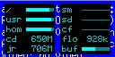
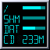
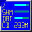
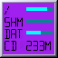
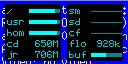
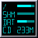
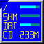
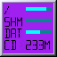

pywmdockapps is the place to be if you are interested in WindowMaker, dockapps and Python.
WindowMaker dockapps are graphical applications fitting in a 64x64 tile. they can work in WindowMaker or any other window manager which can handle WindowMaker style dockapps; typically: Gome or fvwm.
pywmdockapps is a sourceforge hosted project containing a Python library -wmdocklib- and a small collection of rather usable examples.
although some of the included examples are untested, some others are used and maintained by the project coordinator. non eof them comes with any guarantee: they may work well, not work at all, set your computer in flames. even though no such event has yet been reported, you have been warned. the ones Mario Frasca uses all the time are pywmdatetime (removed wmCalClock in its favour) and pywmhdmon.
The example dockapps aim at simplicity and consistency. they are as similar as possible to each other and with no excessive graphics. Since they are written in Python, it shouldn't be too hard to change something you do not like about them. if you do modify things according to your needs and tastes or if you simply try things out, please share your opinions/changes with the community, by sending a comment, suggestion, patch (highly appreciated), or just drop a note to say that you have tried it. see contact information at the bottom of this page.
you may also consider filing a bug or change request... if your request comes with a diff file, chances are that it will be processed quickly (a matter of 3/5 days).
2006-10-26
released a few constraints. the font can be antialiased (the colour is interpreted as levels of gray and the resulting effect is an interpolation between background and text-foreground); the set of patterns and the character set may be each reasonable size; some of the programs accept a --debug option, in which case they also output the xpm to stdout; clashes in symbols used in character definition xpm and patterns are resolved by the library. the ' ' (space) is still reserved for the transparency; all 0..9,a..f are still reserved for 'built in' colours.
2006-10-22
radically restyled the initialization of the xpm. the three parts of which it is composed (drawing area, patterns, charset) are now one on top of the other. the client application does not need take care of making the three components of equal width nor of any specific length: it's the library fixing and keeping track of this kind of things.
the 'background' parameter for the initialization function can be a static pixel map, (in this case the space character is reserved for specifying transparency), or can be left blank (then the pixel map is constructed with 'margin' transparent pixels all around) or you may give a list of 'viewports': rectangular holes you want to dig in the otherwise transparent pixel map.
use the initialization interactively and give 'debug=True' to see the constructed xpm. you may save it in a file and view it with your favourite graphics viewer. there are versions of emacs (e.g.: CVS Emacs on Mac OS X) where you can view a buffer 'graphically' just by hitting C-c C-c.
2006-10-13
we are now at version 1.11. the library can be built/installed/distributed using the standard distutils library. do
python setup.py build sudo python setup.py install
additional fonts can be installed. have a look at the ones defined in the wmdocklib directory. the constraints are: the name must contain an indication of the size of the character cell (something like 6x8); only the ASCII characters 32-127 can be defined; the width of the xpm must be 128 pixels; in the xpm the two characters ' '(space) and '%' are reserved for background and foreground.
once you have added your own font, redo the intallation procedure.
2005-09-05
coordination taken over by Mario Frasca. project accepted in sourceforge.
2004-07-15
Minor feature enhancement/bug fix in pywmhdmon.
2003-09-01
Some bugfixes in pywmdatetime and pywmhdmon.
2003-07-02
Pywmgeneric now has support for up to ten mouse buttons.
2003-06-28
Fixed a bug in three of the applications where a mouse click caused the app to hang.
2003-06-27
Added a new dockapp, pywmgeneric.
2003-06-24
Added a new dockapp, pywmsysmon.
2003-06-23
Added a new dockapp, pywmhdmon.
2003-06-17
Added a new dockapp, pywmseti.
2003-06-16
Added a new dockapp, pywmdatetime.
2003-06-13
Kristoffer Erlandsson starts the project, creating the file pywmgeneral.c. Thanks to Martijn Pieterse for the original wmgeneral.c
wmdocklib is a library that makes it possible to write WindowMaker dockapps in Python. Quite a bit of the code is taken from wmgeneral.c and Kristoffer says he just provided Python wrappers around those functions. The library also contains a Python part above the wrappers that ease up argument passing and return values. Also some other usable methods are provided there.
Pywmdatetime is a dockapp that displays the current time, date, weekday and week number. Formats and colours and font are easily configured. The application contains an antialiased font for digits, which is used if the option '-a' is used.
Changes:
2003-09-01
Fixed a bug where the week didn't update if we used %q style week numbering.
2003-06-28
Fixed a bug where a mouse click caused an infinite loop.
2003-06-26
Fixed the bug where longer strings didn't get cleared when shorter ones where painted.
 







Pywmhdmon is a dockapp that monitors the free space of up to five of your filesystems (per instance). the fifth line can be set to contain a little bar that displays the current hard drive activity.
the configuration file can contain more than 5 entries, the '-s' option is then used to skip the correct amount of entries in each activation of the program.
Changes:
2006-10-12
each mount point can be associated to an 'action'. this action can be 'mount' or 'eject'. clicking on a mount point with action 'mount' will toggle mounting it. 'eject' is the same, but after unmounting, ejection will be attempted.
2004-07-15
Added a patch from Mario Frasca (Thanks!) which prevents the app from showing the data from the host file system if there is no filesystem mounted at the given point.
2003-09-01
Fixed a bug where the numbers weren't displayed if they were between 1000 and 1024.
2003-06-28
Fixed a bug where a mouse click caused an infinite loop.
Pywmseti is a dockapp that monitors your SETI@home progress. It displays how many workunits you have done and the progress on the current one. You can start and stop the current process by clicking anywhere within the window.
Pywmsysmon is a dockapp that displays your current CPU and memory usage. It has a graph displaying the history of the CPU usage and a bar to display the current amount of memory in use.
Changes:
2003-06-28
Fixed a bug where a mouse click caused an infinite loop.
Pywmgeneric is a dockapp that displays the first line of output from an external program, the returned string from an python method or an static string. Up to ten mouse actions can be associated with every displayed entry.
Changes:
2003-07-02
Support for up to ten mouse buttons added. Some additionaly fine tuning.
all released files can be found here.
not yet released versions can be downloaded through cvs.
Is there anything you wonder about these programs? Any thoughts, comments, suggestions, bug reports or anything else? Don't hesitate to contact the developers of this project. have a look at the main page for this project.